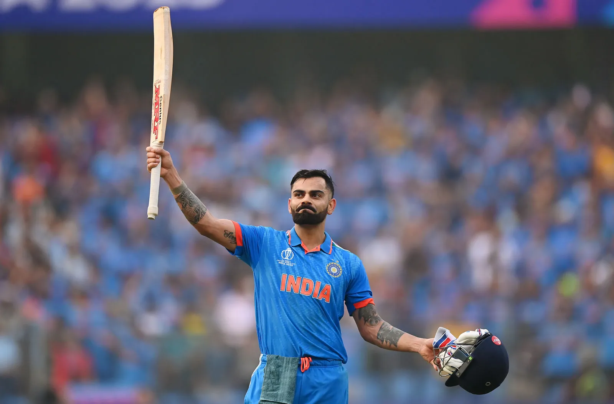

Virat Kohli’s journey in cricket is a story of talent, determination, and transformation. Born in Delhi in 1988, he rose through the ranks of local cricket before leading India’s U-19 team to victory in the 2008 World Cup, which marked his arrival on the big stage. Later that year, he made his ODI debut for India, and within a few years he established himself as one of the most reliable batsmen in the world.
Wikipedia